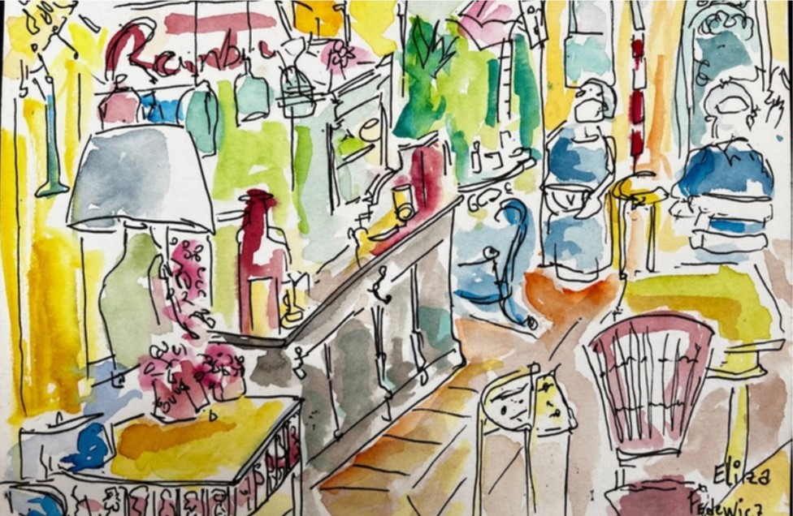
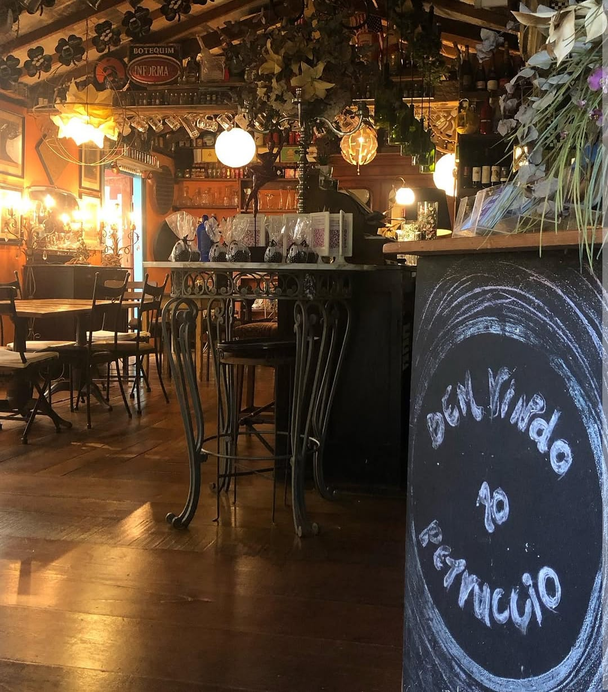

Onde o tempo se dissolve entre sabores e sorrisos.

Petruccio começou como um boteco pequeno no Bichinho, nascido do desejo de criar um espaço onde o tempo desacelera e o encontro tem gosto.
Aqui tudo tem história, das cadeiras aos quadros, dos copos às luminárias. Cada detalhe foi garimpado com cuidado, em diferentes lugares por onde passamos, e carrega consigo lembranças vivas de outras mesas, outros risos, outras conversas.
As coleções, a arte, os objetos, as garrafas, todos contam fragmentos da nossa jornada. E tudo isso se mistura à comida, ao som do copo sendo pousado na mesa, ao cheiro que vem da cozinha.
Petruccio não é só um lugar. É um sentimento e quem senta à nossa mesa passa a fazer parte dele também.

Peças buscadas em outras cidades, outras casas, outras mesas e cada uma chega ao Petruccio carregando uma história que não é a nossa, mas passa a ser.
Antiguidades restauradas dão o tom quente das noites por aqui. Nada é novo, tudo já viveu em outro lugar antes de iluminar o seu jantar.
A aquarela do salão, de Eliza Fedewicz, foi pintada só com as bebidas do Petruccio. Cada cor já foi bebida antes de virar tinta.